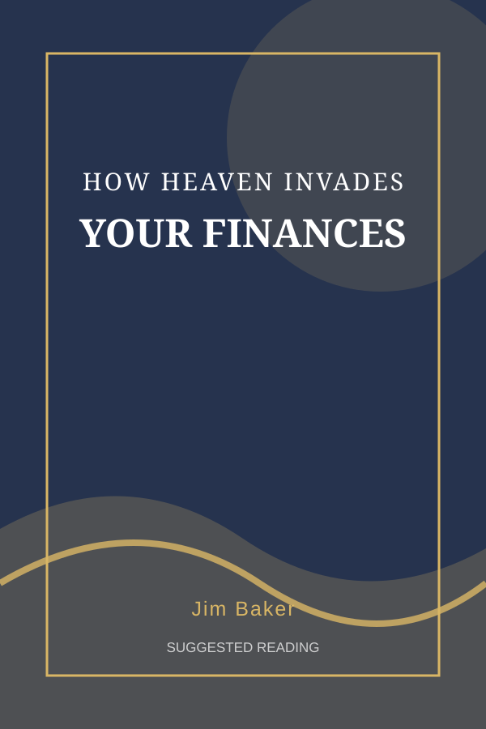
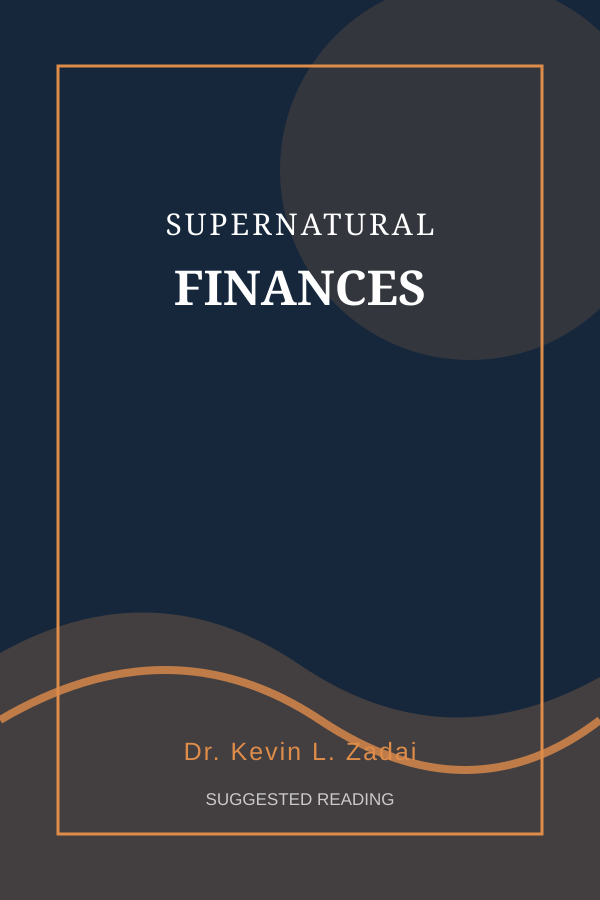
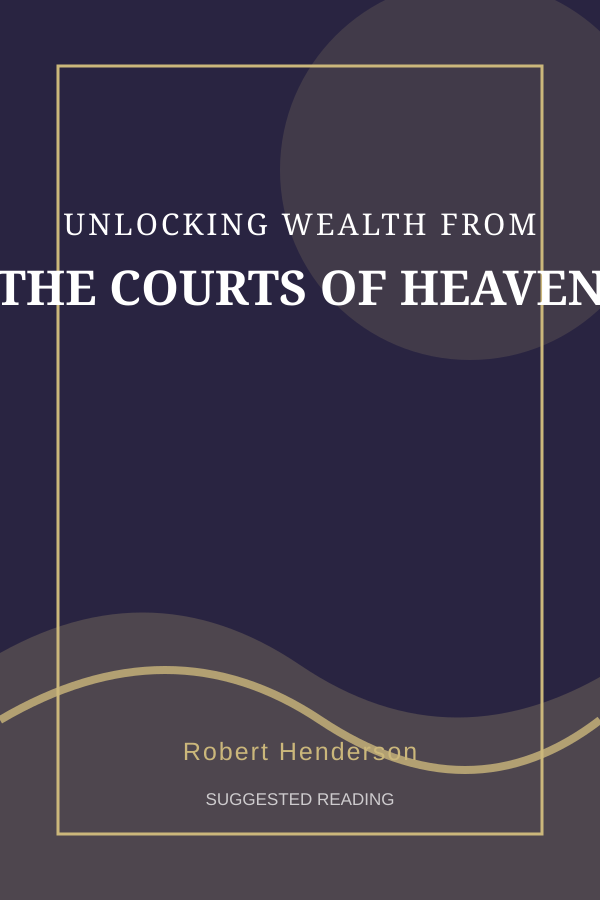

Resources
Kingdom wealth, stewardship, and life together in the Body of Christ.
Wealth is about a Kingdom war against darkness. God desires to bless us with wealth as a confirmation of His covenant with us (Deuteronomy 8:18), and we display our allegiance to the Kingdom of Heaven by managing it according to Biblical principles. Nearly half of Jesus’ parables relate directly to stewardship. And in case you’re thinking that stewardship means saving and planning for retirement, take a look at the following parable in Luke 12:16–21:
16 And he told them a parable, saying, “The land of a rich man produced plentifully, 17 and he thought to himself, ‘What shall I do, for I have nowhere to store my crops?’ 18 And he said, ‘I will do this: I will tear down my barns and build larger ones, and there I will store all my grain and my goods. 19 And I will say to my soul, “Soul, you have ample goods laid up for many years; relax, eat, drink, be merry.”’ 20 But God said to him, ‘Fool! This night your soul is required of you, and the things you have prepared, whose will they be?’ 21 So is the one who lays up treasure for himself and is not rich toward God.”
Luke 12:16–21
The early church was on to something when “no one said that any of the things that belonged to him was his own, but they had everything in common. And with great power the apostles were giving their testimony to the grace of the Lord Jesus, and great grace was upon them all. There was not a needy person among them…”
They understood the power of connecting as one body in the unity of the Spirit. When we are willing to step into our callings and submit our skills and resources to the Body of Christ, we will begin to accomplish the impossible.
Suggested Reading
These titles offer additional perspectives on Kingdom wealth, stewardship, and supernatural finances.



Cover images shown here are original decorative representations, not the publishers’ official book covers.